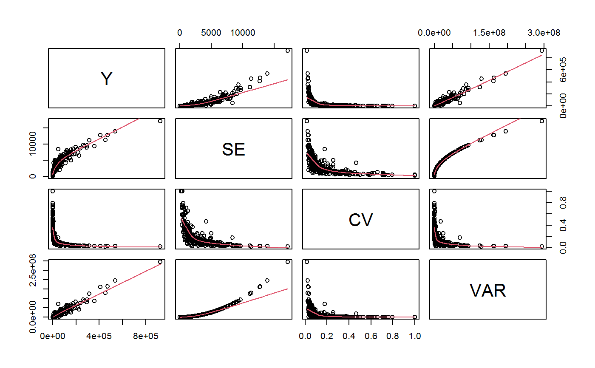

AF.gvf.RdFile AF.gvf contains a set of summary statistics that can be used to illustrate ReGenesees facilities for fitting Generalized Variance Functions models. These summary statistics have kind ‘Absolute Frequency’ (see function estimator.kind), i.e. involve estimates and errors of counts.
data(AF.gvf)
Each row of the ee.AF data frame represents an estimated absolute frequency along with its estimated sampling error (expressed in terms of standard error, coefficient of variation and variance). The data frame has 349 rows, and the following 5 columns:
nameThe name of the original estimate, factor with 349 levels.
YThe value of the original estimate (an absolute frequency), numeric.
SEThe standard error of the original estimate, numeric.
CVThe coefficient of variation of the original estimate, numeric.
VARThe variance of the original estimate, numeric.
Object AF is a list storing estimates and errors of counts (namely, summary statistics of kind ‘Absolute Frequency’) computed on survey design object exdes. The names of the slots of list AF indicate the nature of the corresponding estimates, e.g. element AF[["sex.marstat"]] stores estimates and errors of the joint absolute frequency distribution of variables sex and marstat (see ‘Examples’).
Object ee.AF is the gvf.input object built upon all such summary statistics, via function gvf.input (see ‘Examples’).
estimator.kind to assess what kind of estimates are stored inside a survey statistic object, GVF.db to manage ReGenesees archive of registered GVF models, gvf.input and svystat to prepare the input for GVF model fitting, fit.gvf to fit GVF models, plot.gvf.fit to get diagnostic plots for fitted GVF models, drop.gvf.points to drop alleged outliers from a fitted GVF model and simultaneously refit it, and predictCV to predict CV values via fitted GVF models.
#> [1] "list"length(AF)#> [1] 17names(AF)#> [1] "ind" "sex" #> [3] "marstat" "age5c" #> [5] "age10c" "regcod" #> [7] "procod" "sex.marstat" #> [9] "sex.age5c" "marstat.age5c" #> [11] "sex.regcod" "sex.procod" #> [13] "sex.marstat.age5c" "sex.marstat.age10c" #> [15] "sex.marstat.regcod" "sex.marstat.procod" #> [17] "sex.marstat.age5c.regcod"AF$sex.marstat#> Total SE #> I(sex:marstat)f:married 273569.6 9317.489 #> I(sex:marstat)f:unmarried 159141.1 8208.844 #> I(sex:marstat)f:widowed 37350.1 4005.659 #> I(sex:marstat)m:married 263110.6 9690.125 #> I(sex:marstat)m:unmarried 153513.4 7509.333 #> I(sex:marstat)m:widowed 37416.5 3631.664#> [1] "svystatTM" "data.frame"#> name Y SE CV VAR #> 1 ind 924101.3 17172.681 0.01858312 294900983 #> 2 sexf 470060.8 12796.386 0.02722283 163747492 #> 3 sexm 454040.5 11359.582 0.02501887 129040102 #> 4 marstatmarried 536680.2 13970.474 0.02603128 195174152 #> 5 marstatunmarried 312654.5 11180.844 0.03576102 125011282 #> 6 marstatwidowed 74766.6 5880.564 0.07865228 34581029str(ee.AF)#> Classes ‘gvf.input’ and 'data.frame': 349 obs. of 5 variables: #> $ name: Factor w/ 349 levels "age10c1","age10c10",..: 331 348 349 332 333 334 11 12 13 14 ... #> $ Y : num 924101 470061 454041 536680 312655 ... #> $ SE : num 17173 12796 11360 13970 11181 ... #> $ CV : num 0.0186 0.0272 0.025 0.026 0.0358 ... #> $ VAR : num 2.95e+08 1.64e+08 1.29e+08 1.95e+08 1.25e+08 ... #> - attr(*, "y.vars")= chr [1:7] "ind" "sex" "marstat" "age5c" ... #> - attr(*, "stats.kind")= chr "Absolute Frequency" #> - attr(*, "has.Deff")= logi FALSE #> - attr(*, "design")= symbol exdesplot(ee.AF)# The design object used to compute ee.AF is the following: exdes#> Stratified 2 - Stage Cluster Sampling Design (with replacement) #> - [55] strata #> - [1307, 2372] clusters #> #> Call: #> e.svydesign(data = example, ids = ~towcod + famcod, strata = ~SUPERSTRATUM, #> weights = ~weight, fpc = NULL, self.rep.str = NULL, check.data = TRUE)#> [1] TRUE